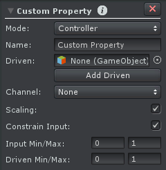
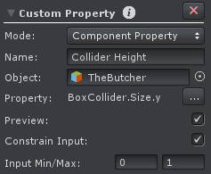
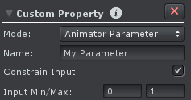

Custom Property
The Custom Property makes it possible to add new properties to a joint/transform. It has 3 different operating modes:
Custom Properties appear in the Clip Editor's Animated Properties List and in the Pose Editor's Channels List. They can be keyed like any other property. Custom Properties can be constrained, meaning that the input value can be limited to a minimum and maximum value. A constrained property is displayed with a slider in the Channels List.
Multiple Custom Property Constraints can be added per joint/transform but the name must be unique within the same joint/transform.
Controller
In this operating mode a Custom Property is like a remote control. It can control one or multiple existing properties. This allows to give existing properties more speaking names and simplifies animating as multiple properties can be controlled at the same time (useful when e.g. all FK/IK Blend properties should be controlled at the same time).
By enabling scaling the Custom Property can have an input value of e.g. -1 ... 0 and scale it to -45 ... 45 for the driven property. Only predefined floating point value typed properties can be driven.
The driven property is set to read only. It can't be manipulated with a Pose Editor Tool or in the Curves View of the Clip Editor.
Setup
Custom Property Constraint - Controller Setup
| UI Element | Description |
|---|---|
| Name | The name of the Custom Property. |
| Driven | A list of joint/transforms whose properties should be controlled by this Custom Property. |
| Channel | The channel that should be controlled by the custom property. Only floating point channels are supported. The selected channel will be set in read-only mode in the driven joints/transforms. |
| Scaling | Enables/Disables scaling of the Custom Property input value. |
| Constrain Input | Enables/Disables limiting of the Custom Property input value. |
| Input Min/Max | Only visible when Scaling or Constrain Input is enabled. Defines the input range of the Custom Property (i.e. the driver). If Constrain Input is enabled, the limits can't be exceeded. If Scaling is enabled, those values are used for scaling (the Driver min value will map to the Driven min value etc.). |
| Driven Min/Max | Only visible when Scaling is enabled. Defines to which values the Custom Property input values should be scaled to when being applied to the driven property. |
Component Property
In this operating mode a Custom Property is used to animate a property of a component (MonoBehaviour) of the animated GameObject.
Typical use cases are:
- Animating Blend Shape weights (e.g. for animating facial expressions)
- Animating the collider size (e.g. reducing the height while crouching)
- Animating a Light component's intensity property for a gun fire animation
- ...
A property of a component (or a blend shape) can only be animated by a single Custom Property. The Custom Property can be attached to a completely different joint/transform than the component that should be animated.
Before importing animation clips that contain curves for blend shapes or component properties, a Custom Property for these properties needs to be configured. Curves where no related Custom Property can be found won't be imported.
Blend Shapes
When a new project is created and a Game Object is applied to the Pose Editor for the first time, UMotion can automatically create Custom Properties for all blend shapes of that GameObject (if the user accepts that in the appearing dialog window).
For existing projects it might be necessary to manually add blend shapes. Therefore add a new Custom Property constraint using the component Property mode to a desired joint/transform. As "Object" the transform that has the "Skinned Mesh Renderer" attached needs to be selected. Select "Skinned Mesh Renderer / Blend Shape /
Setup
Custom Property Constraint - Component Property Setup
| UI Element | Description |
|---|---|
| Name | The name of the Custom Property. |
| Object | The object that holds the component of which a property should be animated. |
| Property | Select the property that should be animated by clicking on the "..." button. A context menu displays all components and all properties that can be animated. Blend shapes can be found under the "Skinned Mesh Renderer" component. |
| Preview | When enabled the value of the animated component property is written in Pose Mode. This makes it possible to preview the changes inside UMotion. Changes are reverted when the animated GameObject is not controlled by the Pose Editor anymore (clear was pressed). |
| Constrain Input | Enables/Disables limiting of the Custom Property input value. |
| Input Min/Max | Only visible when Constrain Input is enabled. Defines the input range of the Custom Property. |
Animator Parameter
In this operating mode a Custom Property is used to animate the value of a Parameter of an Animator Controller. This is similar as if an animation curve is added in the model import settings (see Animation Curves on Imported Clips - Unity Manual).
Setup
Custom Property Constraint - Animator Parameter Setup
| UI Element | Description |
|---|---|
| Name | The name of the Custom Property. |
| Constrain Input | Enables/Disables limiting of the Custom Property input value. When enabled, the Custom Property is displayed with a slider in the Channels panel. |
| Input Min/Max | Only visible when Constrain Input is enabled. Defines the input range of the Custom Property. |
Tip: Boolean Curves
If the Custom Property constraint is used as a Component Property or Animator Parameter it can also be used for animating Boolean properties/parameters. The curve will be displayed like any other float curve inside UMotion. When applied to the property/parameter it is evaluated as "false" if the value equals 0 and "true" if it equals any non-zero value. For simplicity it is recommended to use 0 (= false) and 1 (= true) exclusively as key values inside UMotion. It's also recommended to use the tangent mode "Constant" for all keys of Boolean curves.